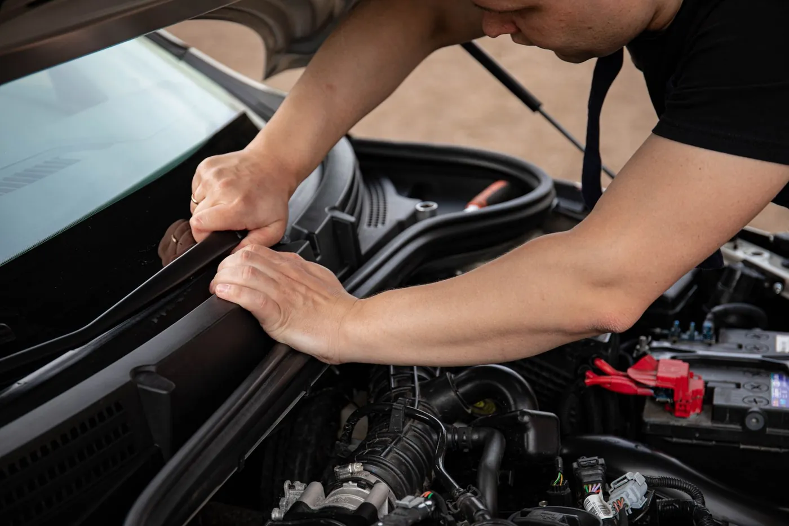

Camera calibration after a new windshield, so lane-keeping and automatic braking see the road the way they should.
(973) 938-8897ADAS calibration in Clifton realigns the forward camera behind your windshield after the glass is replaced. Systems such as Honda Sensing, Toyota Safety Sense, Subaru EyeSight and Ford Co-Pilot360 rely on that camera, and a tiny shift in its view can throw them off.

There are two main methods, and your carmaker decides which one applies. Static calibration sets printed targets at measured distances in front of the car while a scan tool walks the camera through its setup.
People often ask us, “Can’t I just skip it?” You can, but you probably shouldn’t. Dynamic calibration has the tech drive the car on clearly marked roads at a set speed while the camera relearns lane lines. Some cars need both. Either way, the system is checked with a scan tool before you get the keys back.
The camera clips into a bracket bonded to the windshield. Every new windshield sits a fraction of a millimeter differently in the frame, so the camera ends up looking at the road from a slightly new angle.
At highway distance, that tiny angle grows into feet of error. The camera may read a lane line as closer than it really is or judge the car ahead to be farther away. Calibration tells the system where “straight ahead” is again.
Whether your car calls for static, dynamic or both methods is the main factor. Some brands also need extra sensors checked, such as radar in the grille.
Calibration is often covered along with the windshield under comprehensive coverage. Call (973) 938-8897 with your year, make and model and we’ll tell you what your car needs, free.
| Static calibration | Dynamic calibration |
|---|---|
| Done parked, with targets set in front of the car. | Done while driving on well-marked roads. |
| Needs a level, open space and good light. | Needs clear lane lines and dry weather. |
| Common on Toyota, Honda, Subaru and others. | Common on many Ford, GM and European models. |
Calibration usually follows a new windshield. Read about windshield replacement in Clifton.
No. Only cars with a forward-facing camera or sensor on the windshield need calibration. Most cars built in the last several years have one, often behind the rearview mirror, and we check your exact model before ordering glass.
If you skip ADAS calibration, the camera may misread lane lines and distances. You could get warning lights, lane-keep that drifts, or automatic braking that reacts too late or at the wrong time.
ADAS calibration usually takes 30 minutes to an hour, depending on the method your carmaker calls for. Dynamic calibration depends on dry roads with clear lane markings.
Call now for a free quote. We come to your home or job in Clifton.